Render Mermaid .mmd diagrams to HTML (browser), SVG, or PNG — no Node.js required.
Default mode: self-contained HTML with Mermaid.js (CDN). Zero install, opens instantly.
--svg / --png calls Kroki.io API — no mmdc, no Node.js needed.
--mmdc routes to the local mmdc CLI if installed.
dark · forest · default · neutral · base
Pipe mermaid source directly — no temp file needed.
HTML page has a one-click SVG download button and collapsible source panel.
For file output, sfr diagram calls the Kroki.io public API — no local tools needed.
| Type | Mermaid keyword | Use case |
|---|---|---|
| Flowchart | graph TD / flowchart LR | Process flows, decision trees |
| Sequence | sequenceDiagram | API call flows, auth sequences |
| Class | classDiagram | Object models, Apex class hierarchy |
| ER diagram | erDiagram | Salesforce object relationships |
| State | stateDiagram-v2 | Approval process states |
| Gantt | gantt | Sprint / release timelines |
| Pie | pie | Quick data distributions |
| Git graph | gitGraph | Branch strategy |
| Mindmap | mindmap | Feature planning |
| Flag | Default | Description |
|---|---|---|
--file / -f | — | Mermaid source file (.mmd or .md) |
--code / -c | — | Mermaid code as a string |
--output / -o | /tmp/sf-rust-diagram-*.{ext} | Output path; format inferred from extension |
--svg | off | Render to SVG via Kroki.io |
--png | off | Render to PNG via Kroki.io |
--mmdc | off | Use local mmdc CLI for SVG/PNG instead of Kroki.io |
--theme | dark | Mermaid theme: dark · forest · default · neutral · base |
--background | transparent | Background color for PNG/SVG (e.g. white, #1a1a1a) |
--title | "sf-rust diagram" | Title shown in the HTML browser page |
--no-open | off | Generate file but do not open the browser/viewer |
Generated with sfr diagram -f sf-rust-overview.mmd --svg via Kroki.io:

Source: sf-rust-overview.mmd · sf-rust-overview.svg
--file nor --code is given, sfr diagram reads from stdin — perfect for piping: cat erd.mmd | sfr diagram --svg -o erd.svghttps://kroki.io — no account needed, rate-limited for heavy use. Self-host at https://github.com/yuzutech/kroki for offline/CI use.